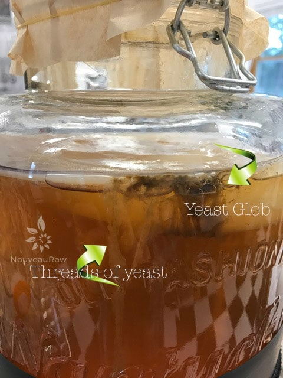
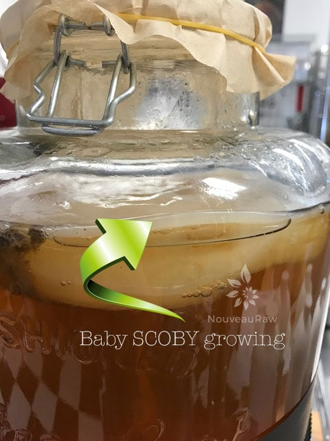

Kombucha Aesthetics
 If you are If you are new to making kombucha or a well-seasoned veteran… the things lurking within your brewing vessel can stop you in your tracks.
If you are If you are new to making kombucha or a well-seasoned veteran… the things lurking within your brewing vessel can stop you in your tracks.
Is this normal? What is that thing!? Is it alive? Is this an incubator for some alien growth?! Where’s Ripley? Did I do something wrong? Is this normal? Oh no, it’s gone bad! Whatever the thought or question is that is flashing through your mind… stop, take a deep breath (breathing is good) and be assured that most likely what you are seeing is normal. Well, normal for a symbiotic culture of bacteria and yeast. :)
Let’s talk about some possibilities.
Many people fear mold when fermenting… and not just with kombucha but with any type of fermenting. And rightfully so (I used to) BUT there is no need to fear. You just need to be educated and have some understanding of what is happening in there. That way you know what to look for like so you can identify what is good and what is bad.
When I first started making my own kombucha, and I’m not going to fib, I was flat out nervous, but as time went on and I gained more knowledge and more experience… that nervousness turned into curiosity and confidence. If I can get there… so can you!
I will be continually updating this post as photo ops happen. I can’t command my kombucha to pose so I can show what the different steps look like. :) So, keep referring back if you spot things happening in your brewing vessel. For instance, I have never experienced mold, so no photo.
Mold:
- First off, mold requires oxygen to grow, so if you see anything floating in the bottom of the jar, it isn’t mold. Mold will be found up top on the scoby IF there is any.
- If you see blue, black, or fuzzy patches located on top of the culture… you have mold. Have you ever seen mold grow on cheese or bread? It looks like that.
- To help avoid mold from forming, use a heating mat or other warming method during cold months.
- Keep your brewing station away from other ferments and house plants. Things go airborne!
- NEVER ATTEMPT TO SALVAGE A MOLDY KOMBUCHA CULTURE.
- As I said above haven’t experienced mold, so I don’t have any personal photos to share with you, but should it happen, I will be sure to document it for you.
Brown Powder or brown strings:
- While your kombucha is brewing (fermenting), you might see a brown powder like substance, or strings. These yeast strands/tendrils are often suspended from the scoby. This is normal and even desired.
- As the yeast hits it dormant phase of life, it sinks to the bottom of the vessel. This may make your brew cloudy looking. This is a good time to do some cleanup maintenance if you are doing a continuous brew. Learn how (here).
Brown globs are attached to my scoby:
- This is normal. This typically takes place as a new scoby is forming. Pockets of yeast can gather on or under the scoby that is what you are seeing. Sometimes they will detach and fall to the bottom.
- Do not be concerned if you see these.
Bubbles!:
- Bubbles are a good sign. They are a sign of active fermentation! If you are used to fermenting other foods, you are also used to seeing bubbles.
Thin white layer on top:
- With every new brew, you will notice a thin white layer taking shape on the top. It starts off as white patches as it slowly fills in, into one solid disc. This is a sign that your batch of kombucha is fermenting properly, so pat yourself on the back.
- Since a new scoby forms with each new batch of kombucha, do I need to do anything other with my scoby? For the first few batches, keep them together. This will strengthen your brew and allow them to grow thicker. When it gets about 2″ thick, you can separate the layers. They will peel apart. Share them with friends, make recipes with them, or create a SCOBY HOTEL to have backups.
Is my scoby is sick? :
- My SCOBY is bumpy instead of smooth. Normal
- The SCOBY has holes in it. Normal
- I think it died, it’s floating sideways in the jar! Normal
- Oh dear! It sunk to the bottom of the jar. Normal
- It’s no longer ivory color, it’s now dark brown. Normal
- My SCOBY is down right black in color! This is a sign of either it has been contaminated or is worn out. Toss it out.
- I see fuzzy mold. Toss it out.
- Bugs are crawling on it. Toss it out.
Watch for Continual Updates
-

-
Yeast Globe – As strange and scary as it may appear, is brown blob is simply coagulated yeast cells. I often see them forming under the surface of your brew, at the edge of the jar.
-

-
With each new batch of Kombucha, a new baby SCOBY will form. This is healthy!

What is Kombucha?
Kombucha Continuous Brew Method
Kombucha Maintenance of Continuous Brew
Kombucha – Equipment Needed
Kombucha – Ingredients Needed
Kombucha SCOBY – Growing from Scratch
Testing Sugar Levels in Kombucha
Bottling Kombucha from a Continuous Brew
Second Fermentation of Kombucha – Adding Flavor & Effervescence
Kombucha SCOBY Hotel
Dealing with Fruit Flies
© AmieSue.com